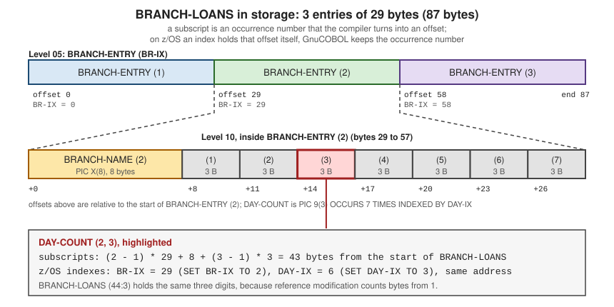

Tables and OCCURS
|
This content was generated with the assistance of AI and should be verified against the official documentation before being relied on in production. |
This page is written against ISO/IEC 1989:2023 (edition 3, January 2023; a 4th edition is upcoming), GnuCOBOL 3.2 and IBM
Enterprise COBOL for z/OS 6.5, checked on 2026-10-20. Every program below was compiled with cobc -x -Wall (GnuCOBOL 3.2.0)
and run. The ones presented as working compiled without warnings (also under -std=ibm), and the deliberately wrong ones
show the real diagnostics. The examples use the Circulation library scenario of this section: a branch-by-weekday loan
count, the BOOKMAST file with the copybook BOOKREC, and a few small lookup tables.
COBOL has no array type. Repeated data is declared once with an OCCURS clause on a data description entry, and the
result is called a table. This page covers how tables are declared, how an element is selected (subscript, index or
relative index), how the number of elements can vary at run time, how a table is filled, and how to make the compiler
check that a reference stays inside it. Searching a table is on
Searching and Sorting Tables, the item descriptions
that tables are built from are on
Data Division and Level Numbers and
The PICTURE Clause, and tables that are allocated at run time
through pointers are on
Pointers and Dynamic Storage.
Fixed-length tables: OCCURS n TIMES
The OCCURS clause names how many times the item it is attached to is repeated. That item is the subject of the clause.
Everything else in its description (the PICTURE, USAGE, VALUE and so on) applies to each occurrence, and so do the
items subordinate to it. The elements are stored one after another with no gaps, so a table of n entries of L bytes
takes n * L bytes.
The rules of the clause that matter in daily work, as the Enterprise COBOL Language Reference states them:
-
OCCURScannot be written on a level01,66,77or88entry, so the table always sits inside a group item. (This is an Enterprise COBOL rule; GnuCOBOL accepts a level01OCCURSby default and rejects it under-std=ibm-strict.) -
A redefined item cannot carry
OCCURS, but an item subordinate to a table can be redefined. -
Whenever the subject, or an item subordinate to it, is referenced it must be subscripted or indexed. The exceptions are the subject of a
SEARCH, of a tableSORT, of theASCENDING/DESCENDING KEYphrase, of aREDEFINESclause, and ofLENGTH OF. -
The optional phrases are
ASCENDING KEY ISandDESCENDING KEY IS(the order the entries are kept in, needed bySEARCH ALL) andINDEXED BY(the index names for the table, described below).
OCCURS integer-2 TIMES
[ { ASCENDING | DESCENDING } KEY IS data-name-2 ... ] ...
[ INDEXED BY index-name-1 ... ]Multidimensional tables
A table element can itself contain a table, which gives a two-dimensional table, and so on. The inner OCCURS is simply
written on an entry subordinate to the outer one. The standard allows seven levels of nesting. GnuCOBOL 3.2.0 compiled
eight nested OCCURS levels without a diagnostic in a test, so stay within seven for portable code. A reference to an element names one subscript per dimension, outermost first, separated by a comma or just
spaces. A comma followed by a space is the readable form.
The program below keeps the number of loans per library branch and weekday. BRANCH-ENTRY repeats three times; each
entry holds the branch name and, inside it, DAY-COUNT repeats seven times. It fills the table with a nested
PERFORM VARYING, then reads the same element three ways: with literal subscripts, with indexes, and with an index plus
an integer.
IDENTIFICATION DIVISION.
PROGRAM-ID. TAB1.
* Two-level table: loans per branch and weekday.
DATA DIVISION.
WORKING-STORAGE SECTION.
01 BRANCH-LOANS.
05 BRANCH-ENTRY OCCURS 3 TIMES INDEXED BY BR-IX.
10 BRANCH-NAME PIC X(8).
10 DAY-COUNT PIC 9(3) OCCURS 7 TIMES
INDEXED BY DAY-IX.
01 WS-BR PIC 9(2).
01 WS-DAY PIC 9(2).
01 WS-TOTAL PIC 9(4) VALUE ZERO.
01 WS-N PIC 9(2).
01 WS-VAL PIC 9(3).
PROCEDURE DIVISION.
MAIN-PARA.
INITIALIZE BRANCH-LOANS
MOVE "CENTRAL" TO BRANCH-NAME (1)
MOVE "RIVERSID" TO BRANCH-NAME (2)
MOVE "HILLTOP" TO BRANCH-NAME (3)
PERFORM VARYING WS-BR FROM 1 BY 1 UNTIL WS-BR > 3
PERFORM VARYING WS-DAY FROM 1 BY 1 UNTIL WS-DAY > 7
MULTIPLY WS-BR BY 10 GIVING WS-VAL
ADD WS-DAY TO WS-VAL
MOVE WS-VAL TO DAY-COUNT (WS-BR, WS-DAY)
END-PERFORM
END-PERFORM
* Subscript form and index form address the same element.
DISPLAY "SUBSCRIPT (2, 3) = " DAY-COUNT (2, 3)
SET BR-IX DAY-IX TO 2
SET DAY-IX UP BY 1
DISPLAY "INDEX (2, 3) = " DAY-COUNT (BR-IX, DAY-IX)
* Relative indexing: index plus or minus an integer.
DISPLAY "RELATIVE (2, 4) = " DAY-COUNT (BR-IX, DAY-IX + 1)
* Whole row and whole table as groups.
DISPLAY "ROW 1 = " BRANCH-ENTRY (1)
PERFORM VARYING BR-IX FROM 1 BY 1 UNTIL BR-IX > 3
MOVE ZERO TO WS-TOTAL
PERFORM VARYING DAY-IX FROM 1 BY 1 UNTIL DAY-IX > 7
ADD DAY-COUNT (BR-IX, DAY-IX) TO WS-TOTAL
END-PERFORM
SET WS-N TO BR-IX
DISPLAY "BRANCH " WS-N " " BRANCH-NAME (BR-IX)
" TOTAL " WS-TOTAL
END-PERFORM
DISPLAY "LENGTH OF BRANCH-ENTRY = " LENGTH OF BRANCH-ENTRY
DISPLAY "LENGTH OF BRANCH-LOANS = " LENGTH OF BRANCH-LOANS
STOP RUN.Running it gives:
SUBSCRIPT (2, 3) = 023
INDEX (2, 3) = 023
RELATIVE (2, 4) = 024
ROW 1 = CENTRAL 011012013014015016017
BRANCH 01 CENTRAL TOTAL 0098
BRANCH 02 RIVERSID TOTAL 0168
BRANCH 03 HILLTOP TOTAL 0238
LENGTH OF BRANCH-ENTRY = 29
LENGTH OF BRANCH-LOANS = 87A few things in the listing are worth reading twice. INITIALIZE BRANCH-LOANS sets the alphanumeric names to spaces and
the numeric counts to zero in one statement, which is the usual way to clear a table (see
VALUE, INITIALIZE and Condition Names).
BRANCH-ENTRY (1) with only one subscript is legal because it names a whole group, and the DISPLAY shows the eight
name bytes followed by the seven counts, with nothing between them. LENGTH OF BRANCH-ENTRY is 29 (8 + 7 * 3) and
LENGTH OF BRANCH-LOANS is 87 (3 * 29), which is how you can check by hand what the compiler laid out. The MULTIPLY
and ADD pair fills the counts without a COMPUTE so that the same source also compiles warning-free under
-std=ibm.

Figure: BRANCH-LOANS as 87 contiguous bytes. Element (2, 3) is 43 bytes in, whichever way it is addressed.
Subscripts, indexes and relative indexing
There are three ways to select an element, and they all address the same storage.
| Form | What it is | Notes |
|---|---|---|
Subscript |
A literal, or an unedited numeric integer data item, that holds the occurrence number, counted from 1:
|
Any integer item works, so the same variable can also drive a loop or be printed. The compiler computes
|
Index |
An index name declared with |
On z/OS an index holds a byte displacement from the start of the table, so no multiplication is needed at run time. It
is not an ordinary numeric item: it is set with |
Relative indexing |
An index name or subscript followed by |
The offset is applied to the occurrence, and the result must stay within the table. Spaces around the sign are required. |
The relationship between the occurrence number and the displacement is the middle of the figure above. In the example,
SET BR-IX DAY-IX TO 2 and SET DAY-IX UP BY 1 leave BR-IX at occurrence 2 and DAY-IX at occurrence 3. On z/OS the
two index items hold 29 and 6, the offsets of the second entry and of the third day within it. GnuCOBOL keeps the
occurrence number in an index item instead: DISPLAY of an index shows +000000003 after SET IX TO 3. Both views are
hidden behind SET, which is why the statement exists and why an index is never `MOVE`d.
Choosing between the two for speed is a compiler question. The GnuCOBOL Programmer’s Guide compares them: a literal
subscript produces the smallest and fastest code, a data-item subscript the largest and slowest, and an index falls in
between and is far closer to the literal. It suggests indexes when a table is touched very many times. For Enterprise
COBOL the guidance is the same in spirit (an index avoids the multiplication) and the SSRANGE, NUMPROC, TRUNC and
OPTIMIZE options change the generated code, which is why measuring beats guessing; see
Performance and Compiler Options.
A table without an INDEXED BY phrase can still be addressed through an index that belongs to another table, which the
Language Reference states explicitly. That makes it possible to walk two parallel tables with one index.
INDEXED BY, USAGE INDEX and the SET statement
An INDEXED BY name is defined by its appearance in the clause: it needs no PICTURE and no other declaration. If an
index must outlive a loop, for example to remember a position, declare a separate item with USAGE INDEX. Such an item
holds an index value and is moved around with SET, not with MOVE.
SET is the statement that moves between the numeric world and the index world.
| Form | Effect |
|---|---|
|
Puts the occurrence number into the index. The value must be a positive integer. |
|
Copies one index to another. |
|
Converts the index back to an occurrence number for display or arithmetic. |
|
Adds to the occurrence number. |
|
Stores an index in a |
The same statement also sets condition names (SET AT-END TO TRUE), switches and pointers; those forms are on the pages
for conditions and pointers. SET ... UP BY and DOWN BY do not check the result against the table: that is the job of
the bounds checks in the last section.
IDENTIFICATION DIVISION.
PROGRAM-ID. TAB14.
* USAGE INDEX item, SET forms and index comparison.
DATA DIVISION.
WORKING-STORAGE SECTION.
01 SHELF-TABLE.
05 SHELF-NAME PIC X(8) OCCURS 5 TIMES
INDEXED BY SH-IX.
01 SAVED-IX USAGE INDEX.
01 WS-NUM PIC 9(2).
PROCEDURE DIVISION.
MAIN-PARA.
MOVE "FICTION" TO SHELF-NAME (1)
MOVE "SCIENCE" TO SHELF-NAME (2)
MOVE "HISTORY" TO SHELF-NAME (3)
MOVE "TRAVEL" TO SHELF-NAME (4)
MOVE "COMICS" TO SHELF-NAME (5)
SET SH-IX TO 4
SET SAVED-IX TO SH-IX
SET SH-IX DOWN BY 2
SET WS-NUM TO SH-IX
DISPLAY "NOW AT " WS-NUM " " SHELF-NAME (SH-IX)
IF SH-IX < SAVED-IX
DISPLAY "SH-IX IS BEFORE THE SAVED POSITION"
END-IF
SET SH-IX TO SAVED-IX
DISPLAY "RESTORED " SHELF-NAME (SH-IX)
DISPLAY "PREVIOUS " SHELF-NAME (SH-IX - 1)
STOP RUN.NOW AT 02 SCIENCE
SH-IX IS BEFORE THE SAVED POSITION
RESTORED TRAVEL
PREVIOUS HISTORYAn index compares like a position: SH-IX < SAVED-IX is true once SH-IX has been moved down by two. SHELF-NAME (SH-IX - 1)
reads the previous element without changing the index, and SET WS-NUM TO SH-IX is the way to print where the index
points.
OCCURS DEPENDING ON: variable-length tables
A table whose number of entries changes while the program runs is declared with a range and a depending data item. This
is the OCCURS DEPENDING ON clause, usually written ODO.
OCCURS [ integer-1 TO ] integer-2 TIMES
DEPENDING ON data-name-1
[ { ASCENDING | DESCENDING } KEY IS data-name-2 ... ]
[ INDEXED BY index-name-1 ... ]The rules of Enterprise COBOL 6.5 are these:
-
integer-1is the minimum number of occurrences and must be zero or greater and less thaninteger-2. If it is omitted it is 1 andTOis omitted as well. Leaving it out raises a warning whenRULES(NOOMITODOMIN)is in effect. -
integer-2is the maximum, and the storage for the table is reserved for the maximum. Only the number of repetitions of the subject changes; the length of one element never does. -
data-name-1, the ODO object, holds the current number of entries. It is the programmer’s job to keep it betweeninteger-1andinteger-2; the compiler does not do it (see the bounds checks below). -
The ODO object is read at the moment the table or its group is used. In the programs below
LENGTH OFreports the length for the current value, not for the maximum.
The next program loads BOOKMAST into a table that can hold up to 100 books. BOOK-COUNT is the ODO object. The program
never writes past the limit: before adding a record it compares the count with a separate limit item, which is the usual
discipline when a file may be bigger than the table.
IDENTIFICATION DIVISION.
PROGRAM-ID. TAB2.
* Load BOOKMAST into a variable-length table, then look at it.
ENVIRONMENT DIVISION.
INPUT-OUTPUT SECTION.
FILE-CONTROL.
SELECT BOOK-FILE ASSIGN TO "BOOKMAST"
ORGANIZATION IS LINE SEQUENTIAL.
DATA DIVISION.
FILE SECTION.
FD BOOK-FILE.
COPY BOOKREC.
WORKING-STORAGE SECTION.
01 WS-EOF PIC X VALUE "N".
88 AT-END VALUE "Y".
01 WS-MAX-BOOKS PIC 9(3) VALUE 100.
01 BOOK-COUNT PIC 9(3) VALUE ZERO.
01 BOOK-TABLE.
05 BOOK-ENTRY OCCURS 0 TO 100 TIMES
DEPENDING ON BOOK-COUNT
INDEXED BY BK-IX.
10 BT-ID PIC 9(6).
10 BT-TITLE PIC X(30).
10 BT-COPIES PIC 9(3).
01 WS-LEN PIC 9(5).
PROCEDURE DIVISION.
MAIN-PARA.
MOVE LENGTH OF BOOK-TABLE TO WS-LEN
DISPLAY "LENGTH WITH COUNT ZERO: " WS-LEN
OPEN INPUT BOOK-FILE
PERFORM UNTIL AT-END
READ BOOK-FILE
AT END SET AT-END TO TRUE
NOT AT END PERFORM ADD-BOOK
END-READ
END-PERFORM
CLOSE BOOK-FILE
MOVE LENGTH OF BOOK-TABLE TO WS-LEN
DISPLAY "LOADED " BOOK-COUNT " BOOKS, LENGTH NOW " WS-LEN
PERFORM VARYING BK-IX FROM 1 BY 1 UNTIL BK-IX > BOOK-COUNT
DISPLAY BT-ID (BK-IX) " " BT-TITLE (BK-IX)
" " BT-COPIES (BK-IX)
END-PERFORM
STOP RUN.
ADD-BOOK.
IF BOOK-COUNT >= WS-MAX-BOOKS
DISPLAY "BOOK TABLE FULL"
ELSE
ADD 1 TO BOOK-COUNT
MOVE BOOK-ID TO BT-ID (BOOK-COUNT)
MOVE BOOK-TITLE TO BT-TITLE (BOOK-COUNT)
MOVE BOOK-COPIES TO BT-COPIES (BOOK-COUNT)
END-IF.LENGTH WITH COUNT ZERO: 00000
LOADED 004 BOOKS, LENGTH NOW 00156
000001 DATA STRUCTURES 003
000002 COBOL BASICS 002
000003 BATCH PROCESSING 001
000004 OLD LEDGERS 001The first output line is the clearest ODO fact: with BOOK-COUNT at zero the table occupies no bytes, and after four
books it occupies 4 * 39 = 156. A zero lower bound (OCCURS 0 TO 100) is what makes the empty state legal; with the
default minimum of 1 an ODO object of 0 is outside the declared range. The storage for all 100 entries (3900 bytes) is
allocated up front, so an ODO table saves nothing in the working storage; what the ODO clause changes is the length the program sees and the checks it gets, which
matters for group moves, for LENGTH OF and for variable-length records.
An ODO table followed by other items
Where the ODO table sits in its record matters. If another item follows it inside the same 01 record, that item is a variable-location item: its address depends on the current ODO value. Enterprise COBOL supports this and the position slides with the count; the default GnuCOBOL dialect refuses it.
IDENTIFICATION DIVISION.
PROGRAM-ID. TAB9.
* ODO table followed by another item in the same record.
DATA DIVISION.
WORKING-STORAGE SECTION.
01 SHELF-REC.
05 SLOT-COUNT PIC 9(2) VALUE 3.
05 SLOT PIC 9(6) OCCURS 1 TO 10 TIMES
DEPENDING ON SLOT-COUNT.
05 SHELF-NOTE PIC X(5) VALUE "NOTE".
PROCEDURE DIVISION.
MOVE 111111 TO SLOT (1)
MOVE 222222 TO SLOT (2)
MOVE 333333 TO SLOT (3)
DISPLAY "LENGTH = " LENGTH OF SHELF-REC
DISPLAY "NOTE = " SHELF-NOTE
STOP RUN.With the default dialect GnuCOBOL 3.2 reports (deliberately wrong here):
tab9.cob:8: error: 'SLOT' cannot have OCCURS DEPENDING because of 'SHELF-NOTE'
6 | 01 SHELF-REC.
7 | 05 SLOT-COUNT PIC 9(2) VALUE 3.
8 > 05 SLOT PIC 9(6) OCCURS 1 TO 10 TIMES
9 | DEPENDING ON SLOT-COUNT.
10 | 05 SHELF-NOTE PIC X(5) VALUE "NOTE".-std=ibm and -std=ibm-strict accept the program (complex-odo and odoslide are on) and give:
LENGTH = +0000000025
NOTE = (five bytes of hex 00)The length is 25, which is 2 + 3 * 6 + 5: the trailing item moved up behind the third slot. In this GnuCOBOL run the VALUE "NOTE" of the
trailing item was applied at its position for the maximum table, so at the new position the item holds five bytes of low-values
(hex 00), which the terminal showed as nothing, and the DISPLAY line above has been annotated by hand; assign items
that follow an ODO table after setting the ODO object. With -std=mf the same program is accepted without sliding and the length is the
maximum (67). Because the behaviour differs by compiler, keep the ODO table as the last item of its record when the code
must be portable. For the z/OS behaviour read the variable-location rules in the Language Reference (z/OS; not run here).
Unbounded tables on z/OS
Enterprise COBOL 6.5 documents UNBOUNDED in place of integer-2: OCCURS 1 TO UNBOUNDED TIMES DEPENDING ON .... An
unbounded table has no declared maximum, and a group that contains one is an unbounded group. Unbounded groups can be
defined only in the LINKAGE SECTION, so the storage comes from the caller. The restrictions in the Language Reference
include: an unbounded group cannot be passed BY CONTENT, cannot be the RETURNING item, and cannot be an argument of
an intrinsic function other than LENGTH; its run-time size must be less than 999,999,999 bytes; and the effect of
SSRANGE is limited for unbounded tables and groups (the bounds are not checked). GnuCOBOL 3.2 has no UNBOUNDED.
Dynamic-capacity tables (COBOL 2014)
COBOL 2014 added tables whose capacity is not fixed at compile time and can be changed while the program runs:
OCCURS DYNAMIC, optionally with a CAPACITY IN data-name phrase that holds the current capacity, FROM and TO limits,
and an INITIALIZED phrase for new elements (as the 2014 standard defines the clause). That is different from ODO: an ODO table always has its maximum reserved,
whereas a dynamic-capacity table grows and shrinks.
Compiler support in this section’s baseline is limited. Enterprise COBOL for z/OS 6.5 has no OCCURS DYNAMIC; its answers
are UNBOUNDED in the linkage section and, for storage obtained at run time, the pointer facilities and the Language
Environment storage services.
GnuCOBOL 3.2 recognizes OCCURS DYNAMIC and CAPACITY IN but does not implement them (a test with the INITIALIZED
phrase was rejected as a syntax error). This program is deliberately wrong for that reason:
IDENTIFICATION DIVISION.
PROGRAM-ID. TAB4.
* Deliberately wrong for GnuCOBOL 3.2: OCCURS DYNAMIC.
DATA DIVISION.
WORKING-STORAGE SECTION.
01 BOOK-IDS.
05 BOOK-ID-ENTRY PIC 9(6) OCCURS DYNAMIC.
PROCEDURE DIVISION.
MAIN-PARA.
MOVE 7 TO BOOK-ID-ENTRY (1)
STOP RUN.tab4.cob:7: warning: OCCURS DYNAMIC is not implemented [-Wpending]
5 | WORKING-STORAGE SECTION.
6 | 01 BOOK-IDS.
7 > 05 BOOK-ID-ENTRY PIC 9(6) OCCURS DYNAMIC.
8 | PROCEDURE DIVISION.
9 | MAIN-PARA.
tab4.cob: in paragraph 'MAIN-PARA':
tab4.cob:10: error: subscript of 'BOOK-ID-ENTRY' out of bounds: 1
8 | PROCEDURE DIVISION.
9 | MAIN-PARA.
10 > MOVE 7 TO BOOK-ID-ENTRY (1)
11 | STOP RUN.
12 | <EOF>The compiler warns that OCCURS DYNAMIC is not implemented, treats the table as having no elements, and then rejects
every subscript on it. So for code that must run on both compilers use an ODO table sized for the realistic maximum, and
for truly unbounded data use a table obtained with ALLOCATE or a file; see
Pointers and Dynamic Storage for BASED items and
ALLOCATE.
Source: GnuCOBOL 3.2 Manual
Initializing and loading tables
A table needs values before it is used. The patterns, from simplest to most flexible:
-
VALUEon the subject. AVALUEclause on an item that hasOCCURSgives every occurrence the same value:05 FINE-LIMIT PIC 9(3) OCCURS 4 TIMES VALUE 10.Different values per element cannot be written this way. -
VALUEplusREDEFINES. For a constant lookup table, give each entry its own value in a group ofFILLERitems and redefine the group with a table description. TheOCCURScannot be on the redefined item, so the table is the redefining one. -
INITIALIZE. Sets every element of the table, or a whole record, to the category default (spaces, zeroes) in one statement. Use it in the first paragraph for tables that grow while the program runs. -
From a file. Read records and move fields into consecutive entries while counting, as the ODO program above does. Initialize the count to zero first, and check it against the table’s limit before each add.
IDENTIFICATION DIVISION.
PROGRAM-ID. TAB3.
* Tables from VALUE plus REDEFINES, and SET on a condition.
DATA DIVISION.
WORKING-STORAGE SECTION.
01 MONTH-VALUES.
05 FILLER PIC X(9) VALUE "JANUARY ".
05 FILLER PIC X(9) VALUE "FEBRUARY ".
05 FILLER PIC X(9) VALUE "MARCH ".
05 FILLER PIC X(9) VALUE "APRIL ".
05 FILLER PIC X(9) VALUE "MAY ".
05 FILLER PIC X(9) VALUE "JUNE ".
05 FILLER PIC X(9) VALUE "JULY ".
05 FILLER PIC X(9) VALUE "AUGUST ".
05 FILLER PIC X(9) VALUE "SEPTEMBER".
05 FILLER PIC X(9) VALUE "OCTOBER ".
05 FILLER PIC X(9) VALUE "NOVEMBER ".
05 FILLER PIC X(9) VALUE "DECEMBER ".
01 MONTH-TABLE REDEFINES MONTH-VALUES.
05 MONTH-NAME PIC X(9) OCCURS 12 TIMES INDEXED BY MO-IX.
01 LOAN-DATE-WS.
05 LD-YYYY PIC 9(4).
05 LD-MM PIC 9(2).
05 LD-DD PIC 9(2).
01 FINE-LIMITS.
05 FINE-LIMIT PIC 9(3) OCCURS 4 TIMES VALUE 10.
01 WS-I PIC 9.
PROCEDURE DIVISION.
MAIN-PARA.
MOVE 20261020 TO LOAN-DATE-WS
SET MO-IX TO LD-MM
DISPLAY "LOAN MONTH: " MONTH-NAME (MO-IX)
DISPLAY "MONTH 2 : " MONTH-NAME (2)
PERFORM VARYING WS-I FROM 1 BY 1 UNTIL WS-I > 4
DISPLAY "FINE-LIMIT " WS-I " = " FINE-LIMIT (WS-I)
END-PERFORM
STOP RUN.LOAN MONTH: OCTOBER
MONTH 2 : FEBRUARY
FINE-LIMIT 1 = 010
FINE-LIMIT 2 = 010
FINE-LIMIT 3 = 010
FINE-LIMIT 4 = 010The REDEFINES lookup table is the standard way to build a code-to-name map without reading a file. The month number
comes from the loan date, SET MO-IX TO LD-MM converts the number to an index, and MONTH-NAME (MO-IX) is the name. A
table with the keys in ascending order and an ASCENDING KEY phrase can then be searched by key; see
Searching and Sorting Tables. Tables whose entries
are read from a file at start-up are best kept in a copybook so that the loading paragraph and every user share one
layout (Copybooks and REPLACE).
Bounds checking
COBOL does not check a subscript by default. A reference past the end of the table reads or writes whatever storage lies beyond it, with no message. This program (deliberately wrong) stores into an eighth element of a seven-element table:
IDENTIFICATION DIVISION.
PROGRAM-ID. TAB5.
* Deliberately wrong: subscript past the end of the table.
DATA DIVISION.
WORKING-STORAGE SECTION.
01 DAY-TABLE.
05 DAY-COUNT PIC 9(3) OCCURS 7 TIMES.
01 AFTER-TABLE PIC X(3) VALUE "XYZ".
01 WS-DAY PIC 9(2) VALUE 8.
PROCEDURE DIVISION.
MAIN-PARA.
INITIALIZE DAY-TABLE
MOVE 5 TO DAY-COUNT (WS-DAY)
DISPLAY "AFTER-TABLE = " AFTER-TABLE
STOP RUN.Compiled and run as it stands it prints no error:
AFTER-TABLE = XYZThe write went somewhere, and what it overwrote depends on how the compiler laid out storage. That is the danger: the program appears to work.
Compile-time diagnostics
If every subscript in a reference is a literal and the result is outside the table, the compiler reports it regardless of
any option. Enterprise COBOL does the same, whatever the setting of SSRANGE. GnuCOBOL:
IDENTIFICATION DIVISION.
PROGRAM-ID. TAB6.
* Deliberately wrong: constant subscript past the end.
DATA DIVISION.
WORKING-STORAGE SECTION.
01 DAY-TABLE.
05 DAY-COUNT PIC 9(3) OCCURS 7 TIMES.
PROCEDURE DIVISION.
MAIN-PARA.
MOVE 5 TO DAY-COUNT (8)
MOVE 5 TO DAY-COUNT (0)
STOP RUN.tab6.cob: in paragraph 'MAIN-PARA':
tab6.cob:10: error: subscript of 'DAY-COUNT' out of bounds: 8
8 | PROCEDURE DIVISION.
9 | MAIN-PARA.
10 > MOVE 5 TO DAY-COUNT (8)
11 | MOVE 5 TO DAY-COUNT (0)
12 | STOP RUN.
tab6.cob:11: error: subscript of 'DAY-COUNT' out of bounds: 0
9 | MAIN-PARA.
10 | MOVE 5 TO DAY-COUNT (8)
11 > MOVE 5 TO DAY-COUNT (0)
12 | STOP RUN.
13 | <EOF>Run-time checks: SSRANGE on z/OS
The SSRANGE compiler option makes the compiler generate checks that run when the statement runs. It checks, in
Enterprise COBOL 6.5:
-
subscripted or indexed references: is the effective address of the element within the maximum boundary of the containing group? (This is not done for unbounded tables and groups.)
-
variable-length references to an item with
OCCURS DEPENDING ON: is the actual length at least zero and within the maximum defined length of the group? (Not done for unbounded groups.) -
reference-modified references: are the offset and length positive, and is their sum within the maximum length of the item?
If the check fails, an error message that names the table or identifier and the line number is written and the program
stops. SSRANGE costs some run time because every subscripted or indexed reference is checked, so the usual practice is
to enable it for development and test builds and decide deliberately for production. As IBM words it, the check is against the
maximum boundary of the containing group, so a subscript between the current ODO value and the maximum is within that
boundary. The other
checking options of the compiler (NUMCHECK, INITCHECK) are on
Compilers and Dialects and on the compiler-options pages of
the mainframe group (z/OS; not run here).
Run-time checks: GnuCOBOL --debug and -fec
GnuCOBOL generates the checks only when asked. cobc --debug turns them all on; -fec=bound-subscript turns on
just the subscript check, and -fec=all enables every exception check. Run with the check enabled, the program from
above stops at the faulty statement:
libcob: tab5.cob:13: error: subscript of 'DAY-COUNT' out of bounds: 8
note: maximum subscript for 'DAY-COUNT': 7
Last statement of "TAB5" was MOVE
MAIN-PARA at tab5.cob:13
ENTRY TAB5 at tab5.cob:11
Started by ./tab5.outThe message names the table, the offending subscript (8) and the maximum (7), the source line, and the paragraph. For a
table with OCCURS DEPENDING ON the check also covers the depending item. In this run the ODO object holds 12 although the
maximum is 10:
LENGTH OF SHELF = +000000072
libcob: tab7.cob:17: error: OCCURS DEPENDING ON 'WS-COUNT' out of bounds: 12
note: maximum subscript for 'SHELF-SLOT': 10
Last statement of "TAB7" was MOVE
MAIN-PARA at tab7.cob:17
Started by ./tab7.outThe first line (LENGTH OF SHELF = +000000072) shows that LENGTH OF simply multiplies by the ODO value, 12 * 6 = 72, even
though the maximum is 60: the length is reported, and the error is raised when the table is referenced. What a subscript
is compared against is selectable with -fsubscript-check:
| Value | Check |
|---|---|
|
against the current ODO value: with |
|
against the |
|
listed in the default configuration, but 3.2.0 rejects it as an unsupported value |
The same program with a subscript of 5 and an ODO value of 3 behaves like this in the two modes, first
-fec=bound-subscript (the default full):
libcob: tab12.cob:13: error: subscript of 'SHELF-SLOT' out of bounds: 5
note: current maximum subscript for 'SHELF-SLOT': 3
Last statement of "TAB12" was MOVE
MAIN-PARA at tab12.cob:13
Started by ./tab12.outand with -fsubscript-check=max it prints STORED, which matches the maximum-boundary check described above for z/OS. In
these tests -fec=bound-odo, -fec=bound-set and -fec=bound-table-limit on their own reported nothing for these two
programs, while -fec=bound-subscript and --debug did; use one of those two for tables.
Choosing and checking a table
-
Declare the table as a subordinate item with a count that matches the real data, and keep a separate limit item next to it instead of repeating the literal.
-
Use a zero lower bound with ODO when the table can be empty, and put the ODO table last in its record.
-
Pick indexes for
SEARCH,SEARCH ALLand heavy loops, and plain numeric subscripts when the position is computed or printed. Convert withSET. -
Never trust the input: check the count before adding an entry and the subscript before using one that came from data.
-
Run test builds with
SSRANGEon z/OS and--debugwith GnuCOBOL; the cost is only paid there.
Where the book is outdated
Tom Taulli’s chapter on tables introduces OCCURS, multilevel tables, INDEXED BY, SEARCH and SEARCH ALL, and that
core is still how tables work. What the book does not cover, and what this page supplies, is everything around the fixed
table: OCCURS DEPENDING ON and its rules, the 2014 dynamic-capacity tables and Enterprise COBOL’s UNBOUNDED tables,
the SET forms and USAGE INDEX, and compile- and run-time bounds checking with SSRANGE or cobc --debug. The book
is also written against Enterprise COBOL V6.3 as the latest release, whereas the current one is 6.5.